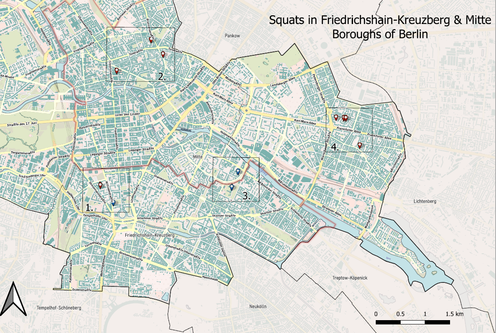
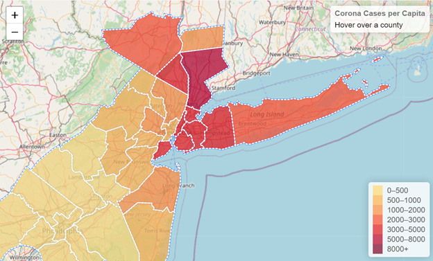

Projects

Map of Squats in Berlin
Berlin's famous occupied houses (squats) mapped using Open Street Map vector layers. The Berlin Wall is georeferenced from a Google Maps image, with custom styling.
See Project

Chloropleth Map
Leaflet-based chloropleth map showcasing COVID-19 cases per million people by county in the NYC/Philadelphia area using GeoJSON data.
See Project
Field vs. Lab Chlorine Analyses Results EDA
EDA focusing on trends in Total Chlorine Analysis results, specifically exploring correlations between differences in lab and field analyses and time delays.
See Project
Find the Hidden Location
Interactive game where users locate a hidden spot globally. Click to discover and permanently mark the location on the map. My hometown was chosen for this game.
See Project